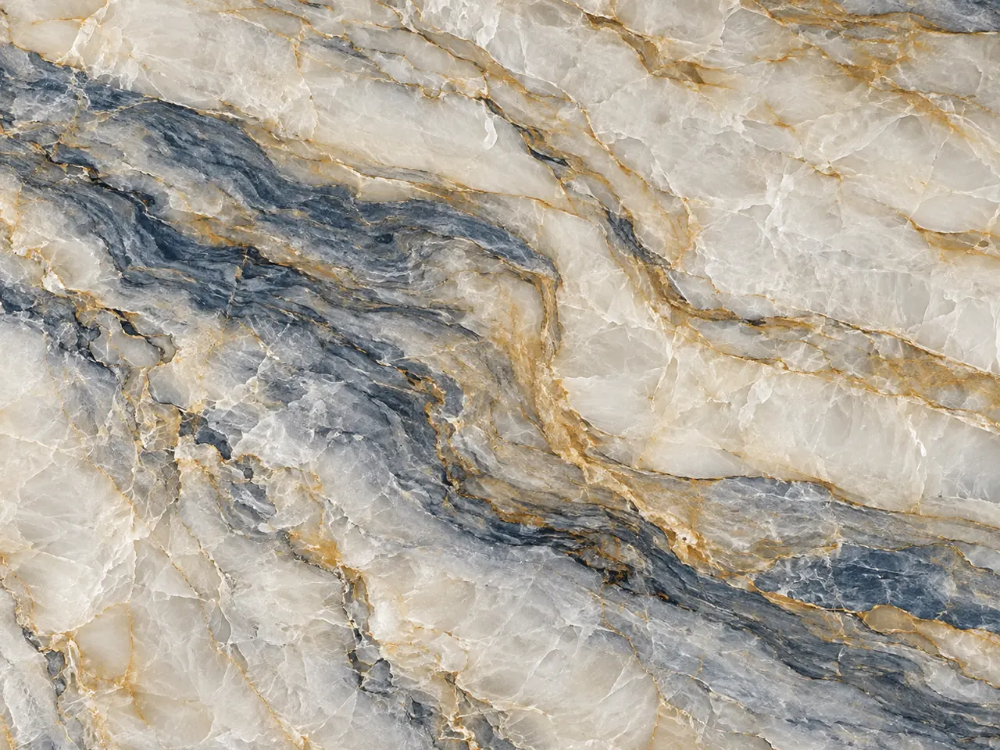
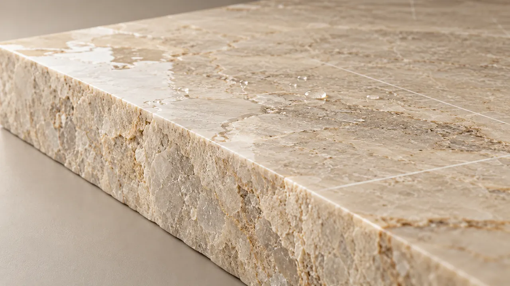
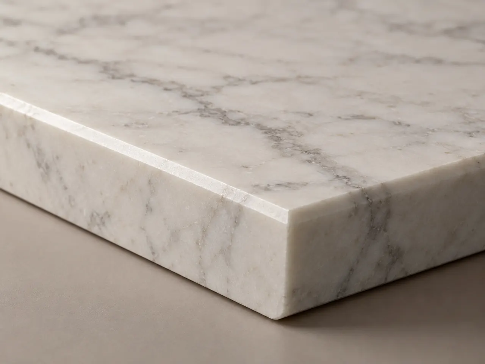
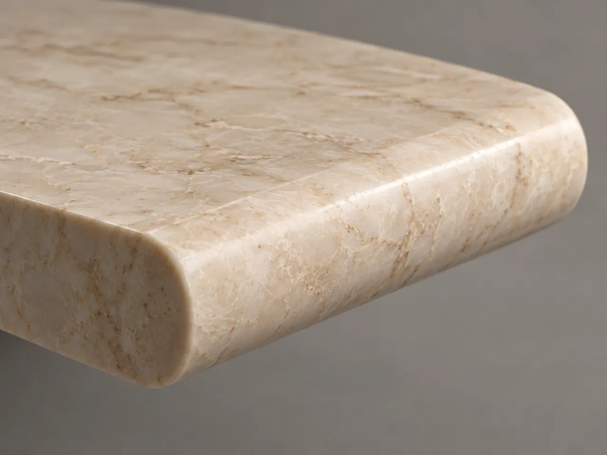
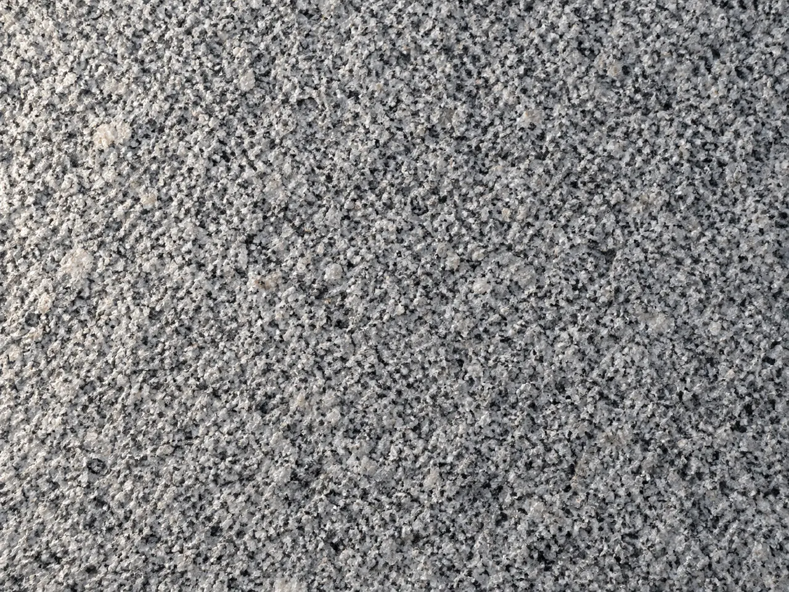

Изделия из натурального камня
Изготавливаем изделия для внутренней отделки по размерам и проектной документации.
Подберите камень для проекта
Поможем выбрать материал по цвету, рисунку, фактуре и условиям применения.

Гранит

Кварцит

Травертин

Оникс

Сланец

От выбора камня до готовых изделий
Подбор материала
Поможем выбрать камень по цвету, рисунку и задачам проекта.
Изготовление по чертежам
Согласуем размеры и особенности обработки перед производством.
Организация поставки
Обсудим объём, сроки и условия заказа.
Изготовление изделий из натурального камня
Работаем с индивидуальными размерами и проектной документацией.




Камень в реализованных проектах
Пример оформления, не реальный объект
Проекты готовятся к публикации.
От заявки до поставки
- Получаем проект или описание задачи.
- Подбираем материал и рассчитываем заказ.
- Согласовываем параметры и условия.
- Изготавливаем изделия и организуем поставку.
Рассчитаем камень для вашего проекта
Пришлите чертежи, спецификацию или описание задачи. Подготовим предложение по материалу и изготовлению.
Заявка отправлена.
Менеджер свяжется с вами в рабочее время и уточнит детали.